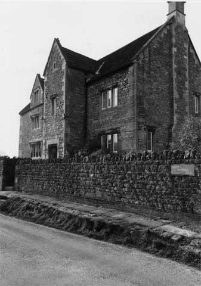
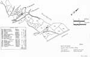

Type of buildings:
Detached farmhouse and detached barn
Listing:
Grade ll
Plan and elevation:
(A) House - Single pile, three units with cross passage. 2 1/2 storeys.
(B) Barn - Threshing type.
Summary of the probable building
history:
(A) House - No later than about 1620-1630. Alterations in the late 18th
or early 19th centuries.
(B) Barn - Late 18th or early 19th Century

Property looking south west from lane. - Note “Monk’s Path” in foreground.
The farmhouse is aligned south-north facing the road and adjoining a raised section of the paved so-called “Monks Path”. The barn is aligned east-west at right angles to the farmhouse and with its east end adjoining the road. The farmhouse and barn together with other associated farm buildings forms the traditional and functional courtyard pattern.
A) The farmhouse
External:
Constructed of coursed rubble with heavy dressed stone quoins. To the left of
the porch there is a four light casement window on the ground floor, a three light
window on the first floor and a two light window on the gable or half storey.
All windows openings are mullioned, of ovolo section (externally and internally),
with a master mullion on the ground floor. All windows are under returned drip
labels. There is a projecting three storied gabled porch tower with a single light
casement window at first floor level. The porch is coped with cross trees finial.
The porch is a later addition to the house, it abuts the main elevation and dissects
a further two light mullion window on the ground floor. The door case on the porch
is dressed stone with ovolo/ogee mouldings and a straight lintel masking a depressed
four centred arched head behind. The inner door opening on the main house provides
entry into a cross passage with a similar door case on the rear elevation (now
covered by a modern extension). These door cases are chamfered and stopped with
depressed four centred arched heads. The house to the right of the porch has been
rebuilt, the rebuilding with slightly larger rubble stone sizing but preserving
the mullion windows to match the older building. On the rear elevation there are
two small former stair lights, now blocked. The roof is pitched and tiled with
ashlar gable end chimney stacks and raised coped verges.
Internal:
The house is much altered internally. The massive gable end chimney breast in
the ground floor south room has been sealed and inset with a modern fire place
(as elsewhere in the house) although this wall still possesses a small window
to the right of the fireplace and the ceiling is spanned with a deeply chamfered
beam stopped at both ends (again as elsewhere in the house). The staircase is
a later insertion and an inner hall in the modern sense has been created. The
curve of the wall and a staircase alcove suggests the previous existence of a
winder or newel stairway with a stair light. This wall curve continues into the
roof space. The central ground floor room, now the kitchen, at one time in the
memory of the owners functioned as a dairy with a stone flagged and runnelled
floor. There is a step down into the cross passage. The room to the north of the
cross passage, while in keeping with the rest of the ground floor rooms, has a
higher ceiling and is part of the later rebuilding.
The roof indicates two distinct phases of construction, divided by the cross passage below. To the south of the cross passage there are two sets of heavy (12” wide) purlins cut back at the joints with the principal rafters, the latter cutting across the gable window. Collars, at a relatively high level, are jointed and wood pegged to the principals. Timbers are waney edged, some still with bark adhering. The principals form a clasped diagonal joint at the apex. To the north of the cross passage the roof has been reconstructed. The principals form a simple diagonal joint at the apex, the collars are at a low level (no head room) and are scarf jointed into the principals and iron bolted. However, the wall plate and ridge lines have been preserved. It was noted that there are vestiges of plaster on the walls of both parts of the roof space denoting earlier residential or storage use of the half storey, which is to be expected. The heavy scantling of the roof timbers indicates an original stone slated roof covering.
Date & development:
The building dates from the early 17th Century; it is unlikely to have been constructed
any later than about 1620-1630, at least in respect of the southern section of
the house. This conclusion is based upon the evidence of the classic Cotswold
window arrangement of 4 - 3 and 2 light windows on the front elevation,
the ovolo section mullions with a master mullion, the gable construction, particularly
the roof timbers with the principal rafter cutting across the gable window, an
experimental form of construction prior to the establishment of the Cotswold extended
collar system later in the 17th Century, the depressed four centred arching of
the cross passage door heads and the plan of the house. The single pile, three
unit, cross passage plan is the traditional farmhouse plan and it is suggested
that the central dairy remembered by the owners is the original arrangement and
has been identified by Linda Hall in her survey of the rural houses of North Avon
and South Gloucestershire (p.17-18) and datable to the early to mid 17th Century.
In the late 18th or early 19th Century, the three storied porch was added and the northern section of the house remodelled to provide a higher ground floor room. At the same time roof alterations were effected in this part of the house with lower collar beams, whilst retaining the original roof lines, the winder or newel stair was replaced with the present stair arrangement no longer reaching the attic storey which was then closed down to end its previous residential or storage usage.
Ownership/occupation:
The fine homestead of a prosperous yeoman farmer, which by 1840 was owned by John
Hooper and occupied by James Hooper who farmed 144 acres. The Hooper family were
relatively large landowners both in and outside Batheaston (in 1840, for example,
John Hooper was the second largest landowner in Batheaston while Temperance Hooper
owned 97 acres in Batheaston and owned and occupied the nearby property now known
as “Old House”).
It is recalled by the present owners that the farm was sold off in the late 19th Century in payment of gambling debts.
B) The Barn
The barn is of five bays. Of rough coursed rubble stone construction. Porchless
but with large double door openings with dressed stone surrounds, in line and
central on the south and north walls, although the doors on the north opening
have been removed to accommodate entry into a large lean-to erected against the
north wall. Again, on the south wall to the left of the central entry a smaller
animal entry has been inserted. The roof is pitched and tiled with raised copings
on the gable ends. Internally, the central “threshing” floor is stone
flagged. The floor in the bays to the east appears to be earth. The floor of the
bays to the west of the central area is of brick with a runnel and is partitioned
off from, and at a higher level than, the central area. The roof is of a through
purlin construction with the principals forming a diagonal joint at the apex.
Diagonal struts are nailed to the tie beams and principals to provide additional
strength.
Date & development:
There are a few distinguishing features to date the barn. The large centrally
positioned and opposed doors point to a traditional threshing barn prior to the
advent of the more modern pasture farming now practiced on the farm, and general
to the area for many years, and the coming of mechanised threshing. The use of
the west end of the barn as an animal shelter is a late development (the inserted
animal entry and higher floor level), and has occurred since arable cultivation
on the farm gave way to pasture which is post 1840; the Tithe Map indicates significant
arable cultivation on a mixed farm. It is suggested that the barn was built in
the late 18th Century or early 19th Century, possibly when the farmhouse itself
was significantly rebuilt. The thick walls of about 58cms, the typical 18th Century
five bay construction and the relatively shallow pitched roof bear out this conclusion.
However, the late medieval practice of barn building gable end to the road and
the court yard layout of the farm complex may indicate the existence of an earlier
structure on the site now occupied by the barn.
References:
- Tithe Map and Apportionment Schedule for Batheaston, 1840 Somerset Record Office
- Linda Hall “The Rural Houses of North Avon and South Gloucestershire 1400-1720”
City of Bristol Museum & Art Gallery, 1983
Reference Pictures
| The barn - looking south west from lane | Looking north west | South elevation |
Survey Drawings
| Ground Plan | Section | Ground Plan -Barn |
| Section - Barn | Four-light mullion window with a central “master” mullion - about 1620 |
Images from the Archives
 |
| Land use 1840 |